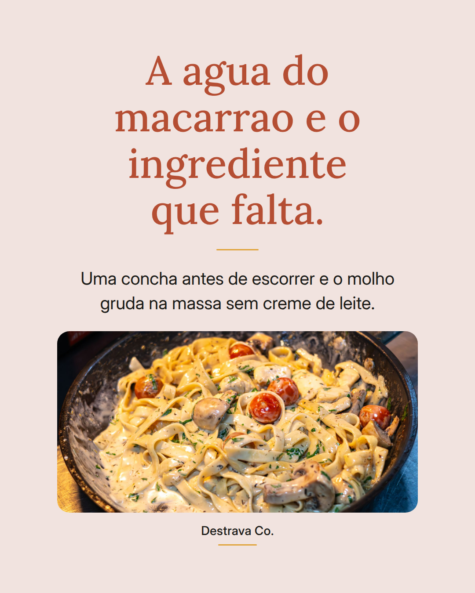
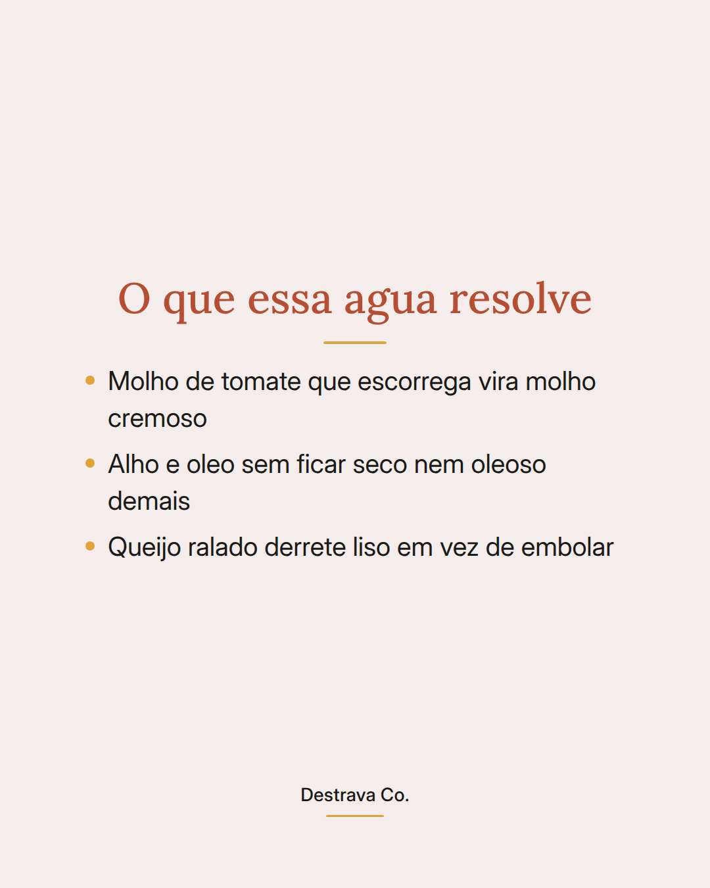
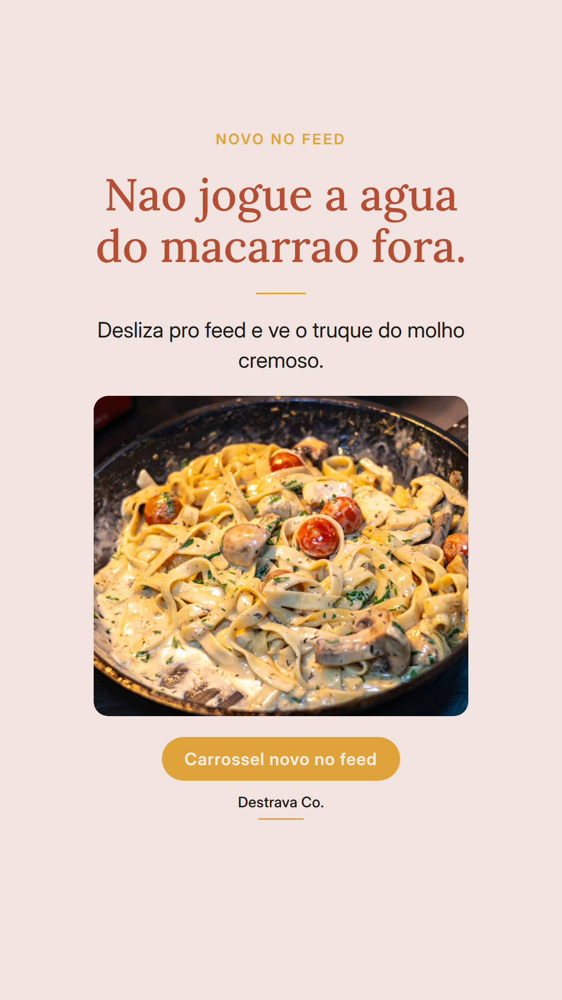
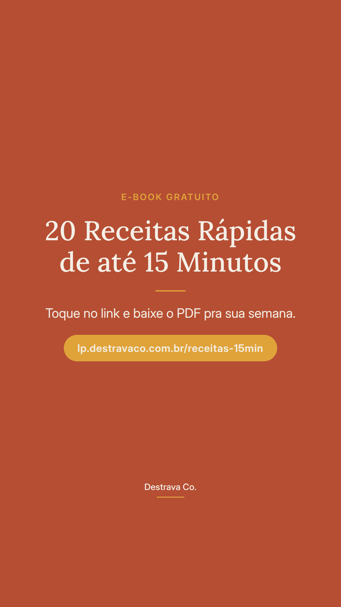

A agua do macarrao e o ingrediente que quase todo mundo joga fora.
Molho cremoso num jantar rapido nao precisa de creme de leite: precisa do amido que fica na agua do cozimento. Guarde uma concha antes de escorrer e volte a massa pra panela do molho por um minuto.
E ali, mexendo, que o molho encorpa e gruda em cada fio. Serve pro tomate simples, pro alho e oleo e ate pro queijo ralado que sempre embola.
Salva pra lembrar na proxima panela de macarrao e manda pra quem sempre escorre tudo na pia. Se quiser mais jantares de ate 15 minutos, o PDF com 20 receitas rapidas esta esperando por voce.